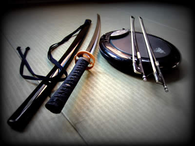
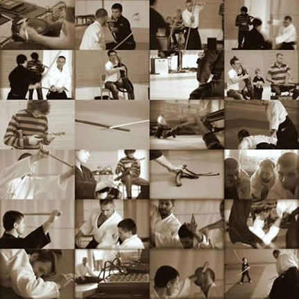

Kard&Vonó

Az InFusion Trio
és az Ecole de BUDO RAJI International
Koncert-Bemutatója
Idõpont:
2012. november 4.
16:00 órai kezdettel
(kb. 90 perc)
Helyszín:
Magyar Színház
1077 Budapest, Hevesi Sándor tér 4.
A résztvevõk:
InFusion Trio
Weisz Nándor - elektromos dob (wave drum, chaosspad)
Simkó-Várnagy Mihály - elektromos cselló, basszusgitár, looper
Farkas Izsák - elektromos hegedû, looper
Ecole de BUDO RAJI International
Gollob Szabolcs - aikido, jodo, iaido
Nagy Sándor - aikido, jodo, iaido
Palágyi László - aikido, iaido
Salamon Arnold - aikido, iaido
Hargitai Ernõ - iaido

Elõlészületek #1
A Kard&Vonó címû elõadás a Magyar Színház, az InFusion Trio és a Nemzetközi RAJI BUDO Iskola közös, kísérleti jellegû vállalkozása. Egy régi magyar színház, egy új magyar zenei formáció és egy hagyományos alapokra épülõ, de sok szempontból teljesen modern gondolkodású emberekbõl álló nemzetközi harcmûvészeti iskola rendkívüli kulturális találkozója.
Kard és vonó, a pusztító harc és az éltetõ harmónia eszközei. Egy hagyományos keleti harcmûvészeti bemutató és egy modern zenei koncert. Régi és új, tradíció és modernitás. A kardnak, mint a harc eszközének eredete a szembenállás, vagyis az egyetértés és az összhang hiánya. Érdekes azonban, hogy a vonónak, mint a zene, az összhang, a harmónia szimbólumának, ugyancsak egy eredetileg fegyvernek használt eszköz, az íj, így közvetetten pedig szintén a háború, a káosz a szülõje, csakúgy, mint a hajdanában harcba hívó dobnak és dobverõnek. A Kard&Vonó koncert-bemutató ezzel szemben a találkozási pontokról, az együttmûködésrõl és az összecsengésekrõl szól: a kard és a vonó, a bot és a dobverõ, a kezek és lábak, szemek, fülek és szívek, a mozdulatok és a figyelem, a hangok és a csend, ember és ember harmóniájáról.
A Nemzetközi RAJI BUDO Iskola harcmûvészeti bemutatójában az Iaijutsu (a kard mûvészete), az Iaido (a kard útja), a Jodo (a botvívás útja), és az Aikido (az egység, a harmónia megteremtésének útja) hagyományos formában gyakorolt mozdulatain keresztül szeretnénk betekintést adni ebbe az eredetileg õsi japán, mára már nemzetközivé vált mozgáskultúrába és életszemléletbe. A szokatlan környezetválasztással, a színházzal és a zenészekkel való együttmûködéssel a harcmûvészet kulturális és esztétikai oldala kerül elõtérbe.
Az InFusion Trio zenéje és hangzásvilága egészen különleges: elektromos hegedû, elektromos cselló és basszusgitár, valamint elektromos dob (wave drum) és káoszpad, looperekkel és effektekkel kiegészítve. A klasszikus zenei háttérrel rendelkezõ muzsikusok mai modern könnyûzenei slágerek teljesen egyedi hangzású feldolgozásán (újrahasznosításán) keresztül akarnak igényes zenei élményt nyújtani a hallgatóságnak. A zenekar elõadásmódjában a magas szintû hangszeres tudás és komolyzenei képzettség párját ritkitó nyitottsággal és könnyed, improvizatív játékossággal párosul.
Hagyományos értékek "tartósítószer-mentes” és konzerválás nélküli, friss, mai formában való átadása - ez a legfõbb találkozási pont színház, zenekar és harcmûvészeti iskola között.
* * *
Jegyek a Magyar Színház internetes oldalán, illetve a dojóban vásárolhatók 2000 Ft-ért. A színház családbarát programjának a keretében az gyerekek és iskolás korúak ingyenesen nézhetik meg az elõadást (elõzetes regisztrációval itt!).
Jegyvásárlás a színház internetes oldalán:

Esemény oldal friss információkkal:
https://www.facebook.com/events/531280256899074/

Elõkészületek #2
Videóelõzetesek:
Az InFusion Trio Facebook oldala:
(Lehet lájkolni! :)


{kind=link}
{kind=link}